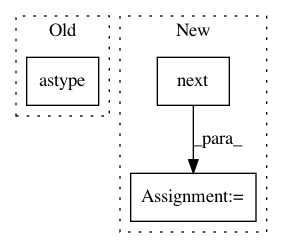

caec2c73aad40c0e632e978964ec5c3cf4773c9e,examples/pytorch_integration.py,,,#,41
Before Change
// read training data
(X_train, y_train), (X_test, y_test) = mnist.load_data()
X_train = X_train.reshape(60000, 1, 28, 28).astype("float32") / 255.
X_test = X_test.reshape(10000, 1, 28, 28).astype("float32") / 255.
y_train = y_train.astype("long")
y_test = y_test.astype("long")
After Change
mnist_data = MNIST(".", download=True, transform=ToTensor())
dataloader = DataLoader(mnist_data, shuffle=True, batch_size=60000)
X, y = next(iter(dataloader))
// read training data
X_train, X_test, y_train, y_test = X[:50000], X[50000:], y[:50000], y[50000:]
X_train = X_train.reshape(50000, 1, 28, 28)
In pattern: SUPERPATTERN
Frequency: 3
Non-data size: 3
Instances
Project Name: modAL-python/modAL
Commit Name: caec2c73aad40c0e632e978964ec5c3cf4773c9e
Time: 2019-06-02
Author: theodore.danka@gmail.com
File Name: examples/pytorch_integration.py
Class Name:
Method Name:
Project Name: sentinel-hub/eo-learn
Commit Name: 9c7eab3c8f334eb712472d2dfa456695688ded61
Time: 2019-09-20
Author: lojze.zust@sinergise.com
File Name: mask/eolearn/mask/cloud_mask.py
Class Name: AddMultiCloudMaskTask
Method Name: execute
Project Name: NeuromorphicProcessorProject/snn_toolbox
Commit Name: cf0181bb0bf5add0686ca4dd4c03e6fb04a34703
Time: 2016-08-22
Author: bodo.rueckauer@gmail.com
File Name: snntoolbox/io_utils/datasets/cifar10.py
Class Name:
Method Name: get_cifar10